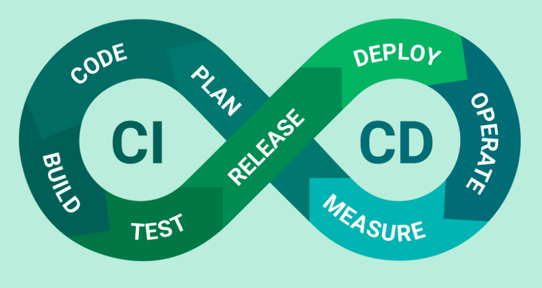
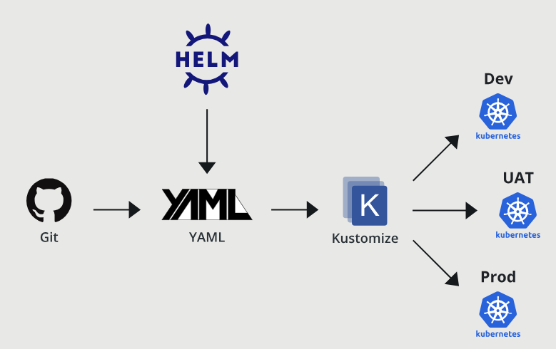
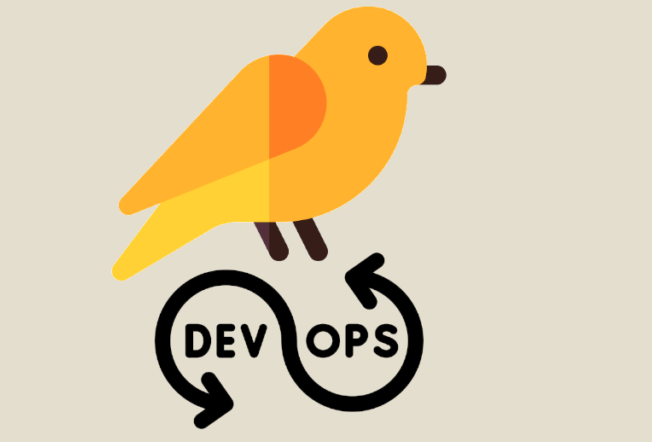
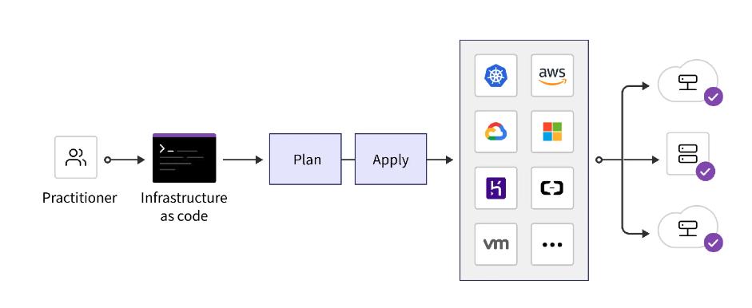

Les dangers cachés de la sur-automatisation en DevOps
17 Août 2025, 18:07 CEST
DevOpsComprendre et éviter les pièges de l’automatisation excessive
L’automatisation est un pilier du DevOps : elle accélère les tâches répétitives, standardise les processus et réduit les erreurs humaines. Mais trop d’automatisation, sans garde-fous, peut transformer un outil puissant en source de chaos. Cet article explore les dangers de la sur-automatisation, les erreurs courantes et comment sécuriser vos déploiements.
1. Une histoire vraie
Imaginez un vendredi après-midi : une mise à jour mineure est déployée sur une application. Cette modification supprime une colonne dans la base de données. Grâce à l’automatisation, la mise à jour passe directement en production sans vérification humaine. Résultat : le système de paiement tombe en panne. Pire, l’équipe met une heure à s’en rendre compte, car les alertes indiquent que “tout va bien”. Moralité : la sur-automatisation, sans filet de sécurité, peut causer des désastres.
2. Quand l’automatisation devient un piège
L’automatisation est idéale pour gagner du temps, mais devient risquée si :
- Elle masque des informations critiques.
- Elle élimine tout contrôle humain.
- Elle complique une intervention rapide en cas de problème.
Dans ces cas, l’automatisation peut introduire plus de risques qu’elle n’en résout.
3. Pourquoi on tombe dans le piège
La sur-automatisation ne se décide pas du jour au lendemain. Elle s’installe progressivement parce que :
- L’enthousiasme pour les nouveaux outils pousse à tout automatiser.
- Supprimer les étapes manuelles semble accélérer les processus.
- On croit à tort que moins d’intervention humaine réduit les erreurs.
- On oublie de réévaluer si l’automatisation reste adaptée avec le temps.
4. Les signaux d’alerte
Vous avez peut-être trop automatisé si :
- La production est une boîte noire que personne n’ose modifier.
- Un petit changement déclenche une cascade de jobs automatisés.
- Revenir en arrière (rollback) est plus complexe que déployer.
- Les nouveaux membres comprennent les scripts, mais pas la logique globale.
5. Comment savoir quoi automatiser (ou pas)
Avant d’automatiser, posez-vous ces questions :
- Est-ce une tâche fréquente ? (Oui = automatisez)
- Si ça casse, est-ce grave ? (Oui = gardez un contrôle humain)
- L’automatisation masque-t-elle des informations utiles ?
- Peut-on réagir rapidement en cas de problème ?
- Qui maintiendra ce script, et est-il bien documenté ?
Règle d’or : Automatisez les tâches fréquentes, simples et peu risquées. Gardez les actions rares ou critiques partiellement manuelles, avec un bouton d’arrêt d’urgence.
6. Sécuriser vos déploiements
Un déploiement entièrement automatisé peut être rapide, mais ultra-risqué. Voici un workflow plus sûr :
- Poussez le code, qui est construit et envoyé en staging.
- Testez en staging.
- Validez manuellement avant le déploiement en production.
- Utilisez un “kill switch” (*1) pour arrêter ou revenir en arrière immédiatement si nécessaire.
L’automatisation, c’est comme le sel dans un plat : indispensable, mais en excès, ça gâche tout.
Les 4 erreurs d’automatisation courantes
Voici quatre erreurs fréquentes qui transforment l’automatisation en cauchemar :
1. Le pipeline “direct en prod”
Chaque commit sur la branche principale est déployé directement en production. C’est rapide, mais une erreur passe immédiatement en prod.
# .github/workflows/deploy.yml
name: deploy
on:
push:
branches: [main]
jobs:
build_deploy:
runs-on: ubuntu-latest
steps:
- uses: actions/checkout@v4
# Build and push the image tagged by commit SHA
- name: Build and push
run: |
docker build -t registry.example.com/payments-api:${GITHUB_SHA} .
docker push registry.example.com/payments-api:${GITHUB_SHA}
# Deploy to production, no gates
- name: Deploy prod
run: |
kubectl set image deployment/payments-api \
payments-api=registry.example.com/payments-api:${GITHUB_SHA}
kubectl rollout status deployment/payments-api --timeout=90s
Problèmes :
- Aucun test ou vérification avant le déploiement.
- Aucune validation humaine.
- Pas de staging, tout va directement en prod.
- Pas de déploiement canary ou blue-green.
- Timeout trop court (90s), risquant un faux “succès”.
2. L’absence de tests automatiques
Déployer sans tests, c’est comme signer un contrat sans le lire. Les scripts doivent inclure des tests unitaires et d’intégration.
3. Aucun contrôle manuel
Même avec des tests, certains changements nécessitent une approbation humaine pour éviter les erreurs critiques.
4. Pas de stratégie de rollback ni de “kill switch”
Sans plan de secours, un incident peut durer trop longtemps, affectant les utilisateurs.

Une version améliorée du pipeline
Voici un pipeline plus sûr, avec tests, staging, validation manuelle et kill switch :
name: deploy
on:
push:
branches: [main]
workflow_dispatch:
inputs:
promote:
description: 'Promouvoir l’image de staging en production'
required: true
default: 'false'
jobs:
build_test_stage:
runs-on: ubuntu-latest
steps:
- uses: actions/checkout@v4
- name: Run tests
run: |
echo "Running tests..."
./run_tests.sh
- name: Build and push image
run: |
IMAGE=registry.example.com/payments-api:${GITHUB_SHA}
docker build -t "${IMAGE}" .
docker push "${IMAGE}"
echo "IMAGE=${IMAGE}" >> $GITHUB_ENV
- name: Deploy to staging
run: |
kubectl -n staging set image deployment/payments-api payments-api=${IMAGE}
kubectl -n staging rollout status deployment/payments-api --timeout=180s
promote_to_prod:
needs: build_test_stage
if: ${{ github.event.inputs.promote == 'true' }}
runs-on: ubuntu-latest
steps:
- name: Check kill switch annotation
id: kill_switch_check
run: |
kill_switch=$(kubectl -n production get deployment payments-api -o jsonpath="{.metadata.annotations.devops-daily\.com/kill-switch}")
echo "Kill switch is: $kill_switch"
echo "::set-output name=enabled::$kill_switch"
- name: Fail if kill switch enabled
if: steps.kill_switch_check.outputs.enabled == 'true'
run: |
echo "Kill switch enabled, stopping deployment to production."
exit 1
- name: Deploy to production
run: |
kubectl -n production set image deployment/payments-api payments-api=${{ env.IMAGE }}
kubectl -n production rollout status deployment/payments-api --timeout=300s
Améliorations :
- Tests obligatoires avant le build. ( checkout action (*3))
- Déploiement initial en staging.
- Approbation manuelle avant la production.
- Kill switch pour arrêter si nécessaire.
- Timeout plus long (300s) pour valider le rollout.
Guide simple : Déploiement Canary avec rollback instantané
Déployer une nouvelle version à 100% des utilisateurs d’un coup est risqué. Le déploiement canary (*2) expose la nouvelle version à une petite partie du trafic (par exemple, 10%). Si tout va bien, on passe à 100%. Si ça casse, on revient en arrière immédiatement.
Attention : Un canary ne fonctionne que si vous avez de bons contrôles, comme :
- Des tests synthétiques (requêtes factices pour vérifier les endpoints).
- Des alertes d’erreurs (logs et métriques surveillés en temps réel).
Étape 1 : Déployer le canary (10% du trafic)
Voici un exemple avec Kustomize (*5) :

# overlays/production/kustomization.yaml
resources:
- ../../base
patches:
- target:
kind: Deployment
name: payments-api
patch: |
- op: replace
path: /spec/replicas
value: 10
- op: add
path: /spec/template/metadata/labels/canary
value: "true"
Cela déploie 10 réplicas avec le label “canary”, soit environ 10% du trafic sur la nouvelle version.
Étape 2 : Promouvoir en production complète
Si tout va bien, passez à 100% du trafic :
kubectl -n production scale deployment/payments-api --replicas=30
Étape 3 : Rollback instantané (si problème)
En cas d’erreurs, revenez immédiatement à la version précédente :
kubectl -n production rollout undo deployment/payments-api
Étape 4 : Mettre en pause (optionnel)
Si vous n’êtes pas sûr, mettez en pause le déploiement et coupez le trafic vers la mauvaise version (si supporté par votre ingress) :
kubectl -n production rollout pause deployment/payments-api

Alerter et communiquer en phase avec vos déploiements
Les déploiements vont vite. Pour rester en sécurité, deux pratiques sont essentielles :
- Alerter au moment des déploiements pour détecter les problèmes immédiatement.
- Partager les résultats des déploiements dans un chat (Slack, Teams, etc.) pour informer l’équipe.
Ces approches permettent une détection rapide, une réaction rapide et moins de confusion.
1. Alerter au moment des déploiements (exemple Prometheus)
Vos alertes doivent :
- Se déclencher rapidement après un déploiement.
- Ne pas attendre plusieurs heures (quand le mal est déjà fait).
- Se concentrer sur les taux d’erreurs ou budgets d’erreurs, pas seulement sur un échec isolé.
Exemple de règle d’alerte Prometheus :
- alert: PaymentsHighErrorRate
expr: sum(rate(http_requests_total{app="payments-api", status=~"5.."}[5m]))
/ sum(rate(http_requests_total{app="payments-api"}[5m])) > 0.05
for: 4m
labels:
severity: page
annotations:
summary: 'payments-api 5xx au-dessus de 5%'
description: 'Vérifiez le dernier déploiement et les logs du canary. Envisagez un rollback.'
Ce que fait cette règle :
- Surveille les erreurs 5xx supérieures à 5% sur 5 minutes.
- Déclenche seulement si le problème dure au moins 4 minutes (réduction du bruit).
- Étiquette
severity: page→ alerte urgente à l’ingénieur d’astreinte. - Message clair : “Regardez les logs du dernier déploiement, rollback si nécessaire.”
Résultat : Les problèmes liés à un déploiement sont repérés rapidement, permettant un rollback ou une investigation immédiate.
2. Partager les résultats des déploiements (Slack ou Teams)
Après chaque déploiement, prévenez l’équipe via un chat pour améliorer la visibilité.
Exemple de webhook Slack :
curl -X POST -H 'Content-type: application/json' \
--data "{\"text\":\"payments-api déployé en production: ${GITHUB_SHA} ✅\"}" \
"$SLACK_WEBHOOK_URL"
Pourquoi c’est important :
- Tout le monde sait quelle version est en ligne.
- En cas d’incident, il est facile de voir ce qui a changé.
- Évite les enquêtes redondantes par plusieurs personnes.
- Renforce la confiance dans l’automatisation tout en gardant les humains informés.
Pourquoi c’est essentiel ?
Alerter dès le déploiement permet une détection et un rollback rapides. Communiquer sur les déploiements réduit la confusion et favorise la collaboration. Ensemble, ces pratiques permettent d’aller vite sans compromettre la sécurité opérationnelle.
11. Note Terraform : ne pas automatiser l’intention
Avec Terraform, il est tentant de lancer un “auto-apply” à chaque merge. C’est rapide, mais cela cache plusieurs risques :
- L’intention disparaît : personne ne voit vraiment les changements appliqués.
- Le drift (écart entre le code et l’infra réelle) peut passer inaperçu.
- Des suppressions surprises peuvent arriver sans validation humaine.
Un flux plus sûr
La bonne pratique est :
terraform plan # commentaire sur la PR
# revue humaine
terraform apply # via CI runner, sur commit approuvé
Avantages :
- Tout le monde voit les changements avant exécution.
- Les reviewers peuvent repérer une suppression involontaire ou un mauvais paramètre.
- L’apply reste automatisé depuis un environnement propre, pas depuis une machine locale.
Si vous devez absolument auto-appliquer
Dans certains cas, l’auto-apply est nécessaire. Dans ce cas :
- Limitez-le aux environnements peu risqués (dev, sandbox).
- Publiez toujours l’artifact du plan pour audit et transparence.
Exemple utile (stocker un plan pour revue)
Voici comment stocker un plan Terraform pour revue :
terraform init
terraform plan -out=tfplan.bin
terraform show -json tfplan.bin > tfplan.json
# Upload tfplan.json comme artifact de build pour revue dans la PR
Cela permet d’afficher clairement le plan dans vos PR ou logs CI. (*8) Les reviewers voient exactement ce qui va changer avant l’application.

En résumé
L’automatisation est essentielle en DevOps, mais une sur-automatisation sans garde-fous peut causer des pannes critiques. Pour éviter les pièges :
- Automatisez les tâches fréquentes et peu risquées.
- Gardez des contrôles humains pour les actions critiques.
- Incluez des tests automatiques et un environnement de staging.
- Prévoyez un kill switch et une stratégie de rollback.
- Documentez vos scripts et réévaluez régulièrement leur pertinence.
Astuces
-
Github action runs-on (), La plupart des workflows GitHub Actions utilisent ubuntu-latest comme runner, mais vous pouvez choisir d'autres runners en fonction de vos besoins : windows-latest si votre construction ou déploiement nécessite des outils ou scripts spécifiques à Windows, ou macos-latest si vous devez construire ou tester des applications Mac/iOS sur macOS
-
Le dossier ../../base dans Kustomize (*5), Le dossier base contient des fichiers YAML de base pour l’installation des ressources Kubernetes. Vous pouvez l’utiliser comme base pour vos propres ressources.
-
Sur le nombre de pods (réplicas) dans le déploiement, Vous pouvez définir n’importe quel nombre selon vos besoins, ressources et trafic. Le nombre de pods par défaut est 1. Pour un environnement de test, 5 pods peuvent suffire. En production, vous pouvez mettre 10, 30, 100 selon la charge. Vous pouvez aussi gérer la montée et descente automatique des pods avec un Horizontal Pod Autoscaler (HPA) (*6) dans Kubernetes.
-
Pour en savoir plus sur la structure interne des ressources Kubernetes (comme /spec/template/metadata/labels) (*7), C’est la manière dont Kubernetes décrit et organise ses ressources dans des fichiers YAML. Vous pouvez consulter la documentation officielle qui détaille la structure de chaque type de ressource Kubernetes.
-
L’option -out=tfplan.bin sauvegarde ce plan dans un fichier binaire nommé tfplan.bin au lieu de l’afficher dans la console. (*8), Ce fichier de plan sauvegardé peut être utilisé plus tard, par exemple avec la commande terraform apply tfplan.bin pour appliquer exactement ce plan.
Références
- (*1) kubernetes - Labels, Annotations and Taints
- (*2) kubernetes - Deployment Strategy Canary
- (*3) github - Checkout action
- (*4) github - Larger standard Github-hosted runners
- (*5) kubernetes - Kustomize templating in kubernetes
- (*6) kubernetes - HorizontalPodAutoscaler Walkthrough
- (*7) kubernetes - Deployment resource definition labels
- (*8) terraform - CLI commands tfplan/v1
Partagez cet article :